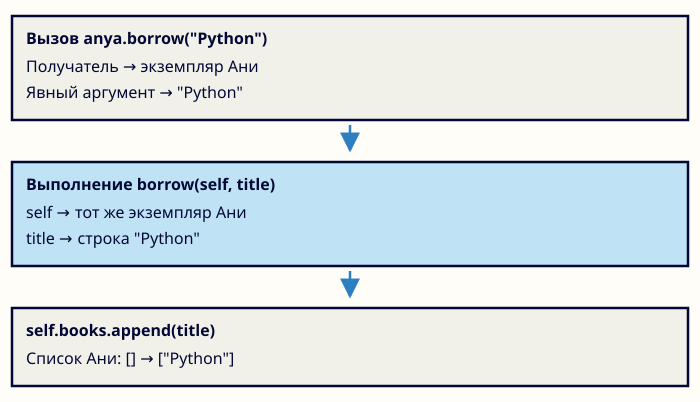
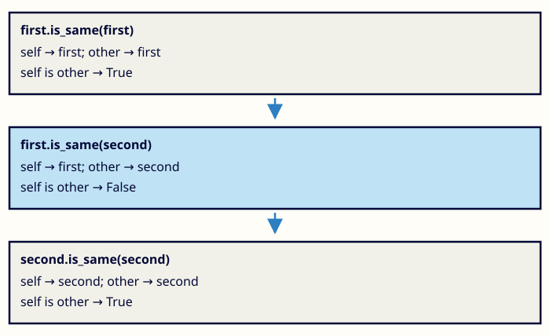
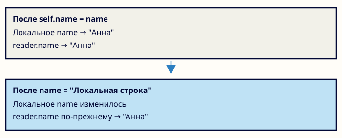
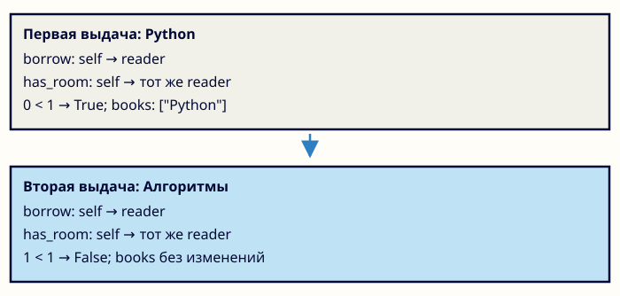
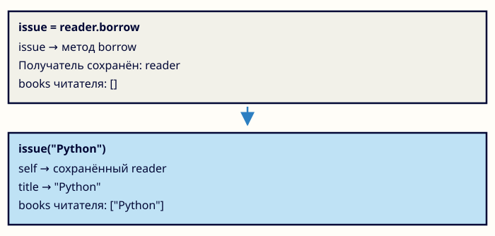
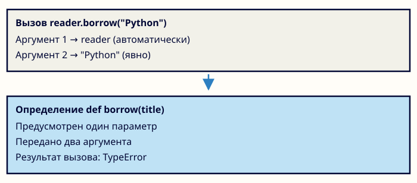

Глава 8.6
Параметр self
В этой главе разобраны передача получателя в self, локальные имена и атрибуты, вызовы других методов и сохранение связанного метода. Примеры показывают, какой объект изменяется при каждом вызове.
- Перед началом
- Главы 8.1–8.5; функции, списки и исключения
- После главы
- Прослеживать получателя метода и отличать локальное присваивание от изменения атрибута.
- Среда
- Python 3.11 и новее · самостоятельные примеры
- Основа
- Модуль 8 исходного справочника · с. 553
§1 Как экземпляр попадает в self
При выдаче книги выбирают билет, в который внесут запись. В вызове anya.borrow("Python") этот выбор записан перед точкой. Объект перед точкой — получатель, а первый параметр обычного метода получает ссылку на него.
class Reader:
def __init__(self, name):
self.name = name
self.books = []
def borrow(self, title):
print(self.name, title)
self.books.append(title)
anya = Reader("Аня")
anya.borrow("Python")
print(anya.books)Аня Python ['Python']
В определении def borrow(self, title) два параметра. В вызове через экземпляр явно передана только строка. Ссылку на anya Python передаёт первым аргументом автоматически. Поэтому внутри метода self.name — имя Ани, а title — название книги.
Проследим соответствие каждой части вызова параметрам определения.

Поля показывают этапы одного вызова. self и anya дают доступ к одному экземпляру.
Вызов через класс Reader.borrow(anya, "Python") для этого метода даёт тот же результат: получатель передан явно. Выполнение обеих записей подряд добавит название дважды. Для одной выдачи выбирается одна форма вызова.
По-простому: выбранный билет внутри процедуры
Сначала выбирают билет Ани, затем процедура выдачи работает с этим билетом. Копия билета для процедуры не создаётся.
Что есть что. anya — имя снаружи; self — параметр внутри метода; оба ссылаются на выбранный экземпляр.
Получатель определяется отдельно для каждого вызова. Сравнение ссылок позволяет проверить, что копия экземпляра не появляется.
§2 Почему self ссылается на тот же объект
Одинаковую процедуру выдачи применяют к разным билетам. Номер выбранного билета меняется от операции к операции. Так же при разных вызовах одного метода self получает разные экземпляры.
class Reader:
def __init__(self, name):
self.name = name
def is_same(self, other):
return self is other
first = Reader("Аня")
second = Reader("Илья")
print(first.is_same(first))
print(first.is_same(second))
print(second.is_same(second))True False True
Параметр other получает явно переданный объект. В первом вызове self и other ссылаются на first. Во втором self по-прежнему связан с первым читателем, а other — со вторым. В третьем оба параметра получают второго читателя.
Три строки схемы сопоставляют эти связи с настоящим выводом.

Поля — три последовательных вызова. self является параметром конкретного вызова, отдельный экземпляр для него не создаётся.
Общее определение метода используется повторно. Параметр self связывается с получателем на время выполнения. В классе не появляется одно постоянное поле self, которое переключается между читателями.
По-простому: один билет под двумя обозначениями
Сотрудник держит выбранный билет. Запись в журнале указывает на тот же билет, поэтому второго документа не возникает.
Что есть что. self и внешнее имя могут ссылаться на один экземпляр; is проверяет эту идентичность.
Внутри вызова есть и другие локальные имена. Их присваивание следует отличать от изменения атрибутов через self.
§3 Чем name отличается от self.name
Значение на рабочем листке можно исправить, не меняя запись в билете. В методе локальное имя тоже существует отдельно от атрибута экземпляра. Точка в self.name определяет, что запись выполняется в объект.
class Reader:
def __init__(self, name):
self.name = name
def rename(self, name):
name = name.strip()
print("До:", self.name)
self.name = name
name = "Локальная строка"
print("Параметр:", name)
print("Атрибут:", self.name)
reader = Reader("Аня")
reader.rename(" Анна ")
print("После:", reader.name)До: Аня Параметр: Локальная строка Атрибут: Анна После: Анна
В начале метода параметр name получает строку с пробелами. strip() возвращает строку без них, и локальное имя перепривязывается к результату. Затем self.name = name сохраняет результат у читателя. Последнее присваивание name меняет только локальную связь.
На схеме отдельно показаны локальное имя и атрибут после двух присваиваний.

Поля показывают два последовательных состояния одного вызова. Присваивание без self меняет локальное имя.
Внешний вывод подтверждает сохранённое значение Анна. Само наличие одноимённого параметра не связывает все его будущие присваивания с атрибутом. Изменение атрибута выполняется явно через объект.
По-простому: исправление на рабочем листе
Новое имя записывают на рабочем листе и переносят в билет. Последующая пометка на листе уже не меняет билет.
Что есть что. name — локальное имя; self.name — сохранённый атрибут; каждое присваивание меняет свою связь.
По той же причине обращение к другому методу получателя записывают через self.
§4 Как вызвать другой метод через self
В процедуре выдачи сначала проверяют число записей в выбранном билете. Затем запись добавляют в тот же билет. Разделим эти действия на два метода: проверку свободного места и выдачу.
class Reader:
def __init__(self, name, limit=1):
self.name = name
self.limit = limit
self.books = []
def has_room(self):
return len(self.books) < self.limit
def borrow(self, title):
if self.has_room():
self.books.append(title)
return True
return False
reader = Reader("Аня")
print(reader.borrow("Python"))
print(reader.borrow("Алгоритмы"))
print(reader.books)True False ['Python']
Метод has_room сравнивает длину списка с пределом выдачи. В borrow вызов self.has_room() передаёт того же получателя. Если место есть, добавляется название и возвращается True. Иначе метод возвращает False без добавления.
Покажем оба вызова при пределе 1. На каждой стадии проверка и изменение относятся к одному читателю.

Поля показывают два последовательных вызова. Внутренний вызов has_room использует тот же экземпляр.
Вторая книга не добавилась: предел уже достигнут. Запись has_room() без объекта искала бы отдельное имя по правилам функций. Имя метода в теле класса само по себе не становится локальной переменной другого метода.
По-простому: проверка и выдача по одному билету
Проверка числа выданных книг и добавление записи выполняются по одному выбранному билету.
Что есть что. self.has_room() получает тот же экземпляр, что и выполняющийся borrow.
При чтении self.has_room получается метод, связанный с получателем. Скобки запускают его выполнение. Эту связь можно сохранить и использовать отдельно.
§5 Получение метода и вызов — разные действия
Выбранный билет можно отложить и продолжить работу с ним позже. В Python результат обращения reader.borrow тоже сохраняет выбранного получателя. Такой объект называют связанным методом: в нём уже определён экземпляр для вызова.
class Reader:
def __init__(self, name):
self.name = name
self.books = []
def borrow(self, title):
self.books.append(title)
reader = Reader("Аня")
issue = reader.borrow
print(callable(issue))
issue("Python")
print(reader.books)True ['Python']
Присваивание issue = reader.borrow получает метод без выполнения его тела. Функция callable проверяет возможность вызова и возвращает True. При issue("Python") в self передаётся сохранённый получатель — читатель Аня.
Схема разделяет получение метода и его последующий запуск.

Поля показывают получение метода и последующий вызов. Метод сохраняет ссылку на тот же экземпляр.
Скобки отличают получение метода от вызова. Связь с экземпляром объясняет, почему при последующем запуске аргумент self передаётся автоматически.
По-простому: отложенная операция с выбранным билетом
Для операции заранее выбирают билет. Позднее указывают книгу и выполняют запись по сохранённому выбору.
Что есть что. issue сохраняет связанный метод; вызов issue(title) использует сохранённого получателя.
Эта передача действует независимо от написания первого параметра. Поэтому его нужно предусмотреть в определении метода.
§6 Соглашение self и ошибка пропущенного параметра
В бумажной форме назначение графы зависит от процедуры заполнения. У метода первого параметра тоже есть определённая роль. self — обычное имя параметра, принятое по соглашению Python-программистов. Для обычного метода экземпляра получатель передаётся в первый параметр независимо от его имени.
class Reader:
def borrow(title):
print(title)
reader = Reader()
try:
reader.borrow("Python")
except TypeError as error:
print(type(error).__name__)TypeError
Определение предусматривает один параметр. Вызов через экземпляр передаёт два аргумента: самого читателя и строку. Их число не совпадает, поэтому тело метода не выполняется и возникает TypeError.
На схеме видно, откуда появился дополнительный аргумент.

Стрелки в строках показывают передаваемые аргументы. До выполнения print внутри borrow программа не доходит.
Правильное определение для этой операции — def borrow(self, title). Запись def borrow(reader, title) технически тоже допустима, если внутри используется reader. Имя self сохраняет единообразие и сразу обозначает получателя.
По-простому: графа для выбранного билета
Процедуре нужны выбранный билет и название книги. В форме процедуры должны быть предусмотрены оба входных значения.
Что есть что. Первый параметр получает экземпляр, следующий — явный аргумент; их имена не меняют число передаваемых аргументов.
Итак, self связывает вызов с экземпляром, а точечная запись выбирает его атрибуты и методы. Это позволяет описывать поведение один раз и применять его к разным читателям.
§7 Частые ошибки
| Ошибка | Что происходит | Как исправить |
|---|---|---|
| Пропускать первый параметр метода | Получатель всё равно передаётся, число аргументов не совпадает | Определять self перед явными параметрами |
| Считать self отдельной копией читателя | self ссылается на получателя | Следить за общей идентичностью |
| Писать name вместо self.name для сохранения данных | Меняется локальное имя | Записывать атрибут через объект |
| Писать has_room() вместо self.has_room() | Происходит поиск отдельного имени | Вызывать метод выбранного получателя |
| Путать reader.borrow и reader.borrow(...) | Первое получает связанный метод, второе вызывает его | Использовать скобки для выполнения |
§8 Шпаргалка и термины
- Получатель
- Экземпляр, для которого вызывается метод; anya перед точкой. Пример и схема §1.
- self
- Первый параметр обычного метода экземпляра, получающий ссылку на получателя. Пример и схема §1.
- Идентичность
- Проверяемая через is принадлежность одному объекту; self is other сравнивает ссылки. Пример и схема §2.
- Локальное имя
- Имя внутри вызова функции; параметр name может перепривязываться отдельно от self.name. Пример и схема §3.
- Атрибут
- Значение, доступное через объект; reader.name сохраняет имя читателя. Пример и схема §3.
- Метод экземпляра
- Операция класса, которая при вызове через экземпляр получает его первым аргументом. Пример и схема §4.
- Связанный метод
- Метод с сохранённым получателем; issue связан с reader. Пример и схема §5.
- Исключение TypeError
- Здесь ошибка несоответствия числа переданных аргументов параметрам метода. Пример и схема §6.
Итог главы
- self — ссылка на получателя текущего вызова.
- Присваивание self.name меняет атрибут, присваивание name — локальную связь.
- Другой метод экземпляра вызывается через self.method(...).
- Связанный метод сохраняет получателя, скобки запускают выполнение.
- Имя self принято по соглашению, первый параметр для получателя требуется независимо от имени.